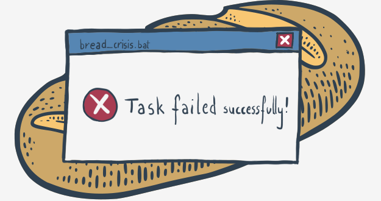

Errors – the developer's daily bread
It seems indisputable that all programmers (including you) want to write error-free code and do their best to achieve this goal. Unfortunately, nothing is perfect in this world and software is no exception. Pay attention to the word exception as we’ll see it again very soon in a meaning that has nothing in common with the absolute.


The Bread Error


To err is human. It's impossible to make no mistakes, and it's impossible to write error-free code. Don't get us wrong – we don't want to convince you that writing messy and faulty programs is a virtue. We rather want to explain that even the most careful programmer is not able to avoid minor or major defects. It's only those who do nothing that make no mistakes.

Paradoxically, accepting this difficult truth can make you a better programmer and may improve your code quality.

"How could this be possible?", you may ask.

We'll try to show you.


Errors in data vs. errors in code
Dealing with programming errors has (at least) two sides. The one appears when you get into trouble because your – apparently correct – code is fed with bad data. For example, you expect the code will input an integer value, but your careless user enters some random letters instead.

It may happen that your code will be terminated then, and the user will be left alone with a terse and ambiguous error message on the screen. The user will be unsatisfied, and you should be unsatisfied, too.

We're going to show you how to protect your code from this kind of failure and how not to provoke the user's anger.

The other side of dealing with programming errors reveals itself when undesirable code behavior is caused by mistakes you made when you were writing your program. This kind of error is commonly called a “bug”, which is a manifestation of a well-established belief that if a program works badly, it must be caused by malicious bugs which live inside the computer hardware and cause short circuits or other interference.

This idea is not as mad as it may look – such incidents were common in times when computers occupied large halls, consumed kilowatts of electricity, and produced enormous amounts of heat. Fortunately or not, these times are gone forever and the only bugs which can spoil your code are those you sowed in the code yourself. Therefore, we will try to show you how to find and eliminate your bugs, in other words, how to debug your code.

Let's start the journey through the land of errors and bugs.

